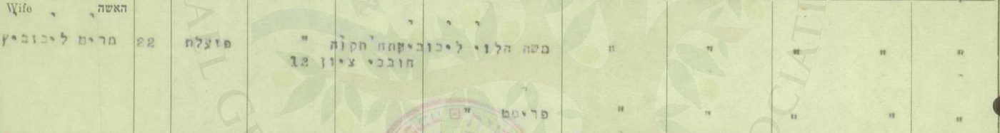
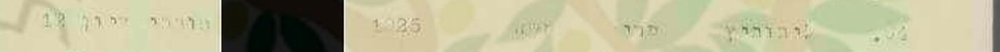
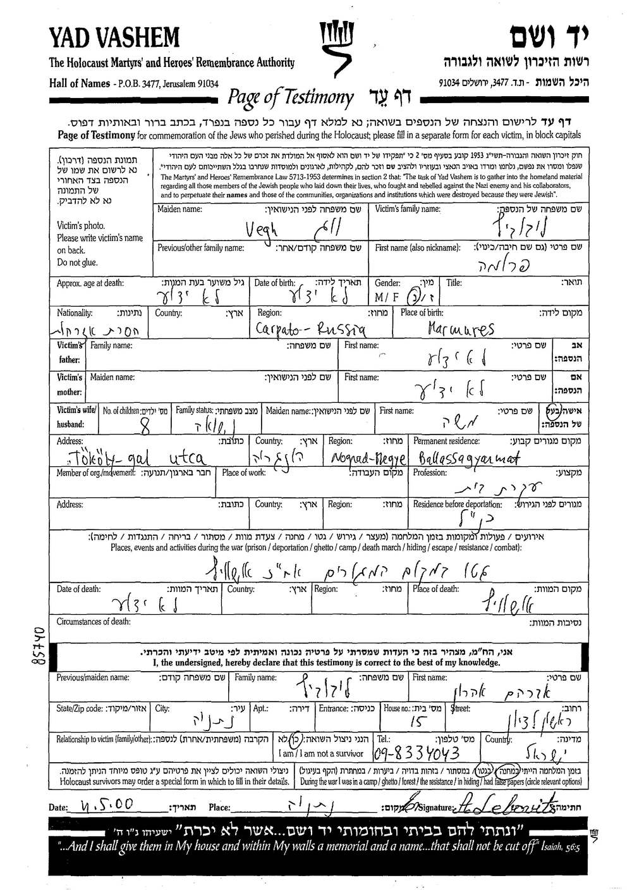
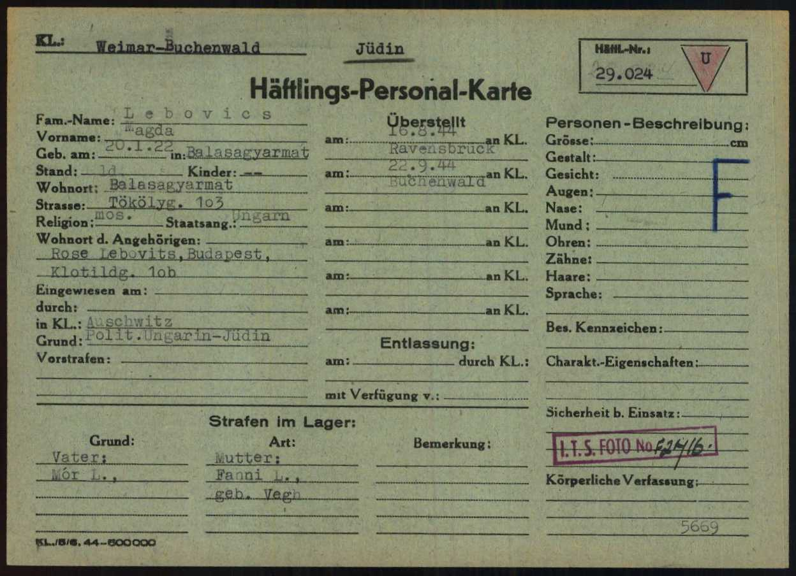
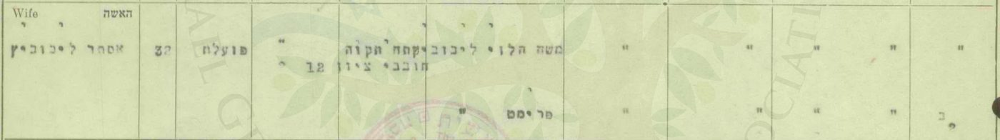
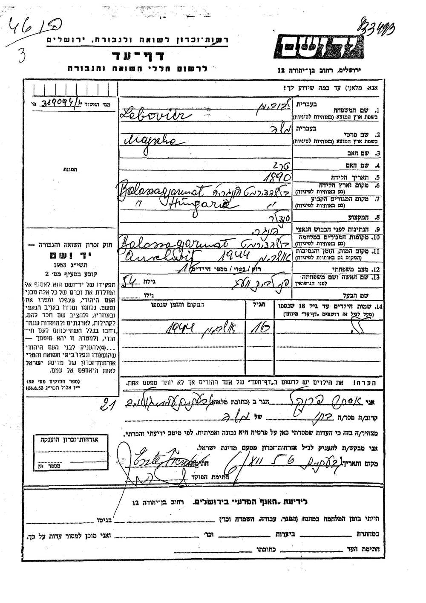
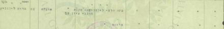
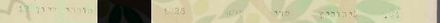
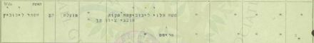
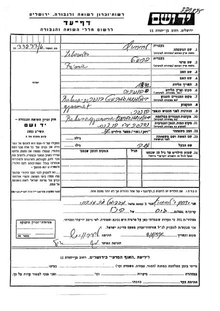

סולם הוודאות ומונחי המחקר — מה המילים האלה אומרות
תוכן העניינים — תשעה פרקים
מרים בלומנטל — מרים ליבוביץ מלידה, "מגדה" לפי עץ המשפחה[7] — נישאה ליעקב בלומנטל ב-27 באוקטובר 1948 ברבנות פתח תקווה: "פועלת" בת 22, מרחוב חובבי ציון 12, בת משה הלוי ליבוביץ ופרימט — שניהם מתים.[1] ברשימת הבוחרים של 1949 — ילידת 1925;[2] ולפי המשפחה — באה מהונגריה.[6]
יום קודם נישאה באותה רבנות אסתר ליבוביץ, בת 32 — מאותה כתובת, ושמות הוריה זהים: אחותה, כמעט ודאי.[15] וכ"אסתר פרנקל" מילאה אסתר ב-1956 וב-1999 דפי עד על אביה משה, סנדלר בבאלאשאג'רמאט שבהונגריה, על אמה פני, על אחיה שמשון ושאנדור ועל אחותה לילה — שנספו ב-1944.[16] מכאן: הוריה של מרים הם, כמעט ודאי, משה ופרומה (פני) ליבוביץ מבאלאשאג'רמאט (4.3); ואם היא בתם מגדה, שעברה ב-1944 את אושוויץ ורוונסבריק — טעון אימות (4.2).
בנה מאיר נולד בפתח תקווה ב-1952; חייל בחיל האוויר, מת באימון ב-1974, בן 22,[3][4] ועל שמו נקראו אחיו אחימאיר.[6] מתי עלתה — לא נמצא.
כל מסמך שנקרא מופיע פעמיים — קישור אל הרשומה בארכיון וקישור אל עותק שמור; גם ממצא שלילי נרשם (9.4).
מאיפה להתחיל
- תעודת הנישואין, 1948 — הוריה, וכתובתה.
- רשימת הבוחרים, 1949 — שנת הלידה.
- אסתר, האחות — שתי תעודות נישואין, ודפי העד שמילאה.
- המועמדות שנשללו — "מרים ליבוביץ" אחרות.
- מאיר, 1952–1974 — הבן שעל שמו נקראו אחיו.
- הפעולות הפתוחות — מה עוד חסר, ואת מי לשאול.
1. תמצית
המסמך הראשון: תעודת נישואין H 99915, רבנות פתח תקווה, מחוז תל אביב, 27.10.1948 — כ"ד בתשרי תש"ט. הכלה: "מרים ליבוביץ", 22, "פועלת", "ישראלית", "פתח תקוה, חובבי ציון 12"; אביה "משה הלוי ליבוביץ", אמה "פרימט" — שניהם מתים. החתן: "יעקב בלומנטל", 30, "חייל", "אי שם...", בן משה בן ציון וחוה — גם הם מתים.[1] — מאומת.
שנת הלידה: ברשימת בעלי זכות הבחירה לכנסת, תש"ט (1949), פתח תקווה (ארכיון המדינה, גל-45496/2), מסמך 394: "ליבוביץ · מרים · משה · 1925 · חובבי ציון 12".[2] הגיל בתעודה (22 ב-27.10.1948) מתיישב עם 1925 או 1926. — כמעט ודאי שזו היא: אותו שם, אותו שם אב, אותה כתובת.
המוצא: לפי המשפחה — הונגריה; העיר — לא נמסרה.[6] מן המסמכים — באלאשאג'רמאט: אסתר ליבוביץ נישאה ב-26.10.1948, יום לפני מרים, באותה רבנות, מאותה כתובת, ושמות הוריה — "משה הלוי ליבוביץ" ו"פרימט" — זהים: אחותה, כמעט ודאי (4.3).[15] וכ"אסתר פרנקל" — ובדפים מ-1999 גם בשם נעוריה, "לייבוביץ" — מילאה אסתר ב-1956 וב-1999 דפי עד על אביה, משה ליבוביץ, יליד 1890, סנדלר; על אמה, פני לבית וג, ילידת בודפשט; על אחיה שמשון (1914) ושאנדור (כ-1924); ועל אחותה לילה (כ-1927) — כולם מבאלאשאג'רמאט, וכולם נספו ב-1944.[16] הזוג הזה — משה ופרומה (פרימט, פני) ליבוביץ לבית וג, מרחוב טקלי — מתועד גם בדפי עד מ-1957 ומ-2000 ובספר ארכיון מחוז נוגראד (4.1). שהם הוריה של מרים — כמעט ודאי. בעץ משפחה שמנהל קרוב, "מ. בלומנטל" — "מרים מגדה בלומנטל (לבית ליבוביץ)", "1925 — הונגריה";[7] ולזוג הייתה בת בשם מגדה, ילידת 20.1.1922, שעברה ב-1944 את אושוויץ, רוונסבריק ואלטנבורג (4.2). שמרים היא מגדה הזאת — אפשר ש… (טעון אימות): השם "מגדה" — מעץ המשפחה בלבד, ושנת הלידה סותרת (1922 מול 1925/26). וברשימת מעפילים שהועברו לעתלית בקיץ 1946 — "לייבוביץ נחמה", 21, ו"לייבוביץ אסתר", 28, בנות משה ו"פרימאם" מהונגריה: נחמה — אחות נוספת, או מרים בשם אחר; אפשר ש… (4.4).[17]
הילדים: מאיר (11.4.1952 – 21.11.1974), "בן מרים ויעקב";[3] ושמשון (26.1.1954), משה ונאוה — מכרטיס ההתאמה ב-MyHeritage.[5] מאתר יזכור ומודעות האבל: מרים ויעקב היו בחיים בנובמבר 1974 (5.2).
הפטירה: "2003" — לפי עץ המשפחה של "מ. בלומנטל" בלבד; טעון אימות.[7]
מה לא נמצא: מסמך שנוקב בעיר הולדתה של מרים עצמה, או שמונה אותה בין ילדי משה ופרומה; דרכה ארצה; תאריך פטירתה ומקום קבורתה (פרק 8).
2. מה ידוע מהמשפחה
כרטיס ההתאמה ב-MyHeritage לשמשון ("Achimeir Family Tree"): "הורים: יעקב בלומנטל ומרים ליבוביץ'"; "אחים/אחיות: משה, נאוה ומאיר" — ככל הנראה מתוך רשומה ב-Geni.[5] ומפי המשפחה (אוהד צדוק, 26.10.2026): "השם משפחה שלהם הוא בלומנטל, אחימאיר זה על שם האח מאיר שנפטר בגיל צעיר"; ו"שני ההורים מהונגריה, אני לא בטוח מאיזו עיר, נוכל לשאול את שמשון".[6] — מאומת כעדות המשפחה.
צאצאיה: שמשון אחימאיר (נ' 26.1.1954), נשוי מ-7.9.1981 לאילנה לבית קוטנר — בתם של אברהם וצפורה קוטנר (המחקר על אברהם, המחקר על צפורה). ילדיהם: טל (14.3.1987, שיקגו), נשואה מ-11.6.2017 לאוהד צדוק; איל (23.7.1989, שיקגו); ושירי (4.1.1998).[5] בנותיהם של טל ואוהד, יסמין ויערה — במחקרים על משפחת קוטנר. — מן העץ המשפחתי; טעון אימות מול רשומה.
ומעץ משפחה ב-MyHeritage שמנהל קרוב, "מ. בלומנטל מישראל", שהגיע למשפחה כ"התאמה חכמה":[7] "מרים מגדה בלומנטל (לבית ליבוביץ) — לידה: 1925 — הונגריה; פטירה: 2003; בעל: יעקב בלומנטל; ילדים: מאיר" ועוד שלושה (פרטיים); חמיה וחמותה — משה בן ציון בלומנטל וחוה (לבית Deutsch); ובין 40 האנשים — גם "יוסף יונגר" ו"פסיה יונגר", "אבא של כלתה" ו"אמא של כלתה" — הורי אשתו של אחד מבניה; כלומר, ככל הנראה, עץ שבנה אחד מצאצאיה של מרים. הוריה של מרים — "פרטי". עץ משתמשים שמקורותיו לא ידועים — כיוון, לא רשומה.
3. פתח תקווה, 1948–1949
3.1 תעודת הנישואין

| שדה | קריאה | דירוג |
|---|---|---|
| שם הכלה | מרים ליבוביץ | מאומת |
| גיל | 22 — נולדה ב-1925 או ב-1926 | מאומת כרישום |
| משלח יד | "פועלת" | מאומת |
| מקום מגורים | פתח תקווה, חובבי ציון 12 | מאומת |
| אביה | "משה הלוי ליבוביץ" — מת (גרשיים, מתחת ל"מת" שבשורת החתן) | מאומת |
| אמה | "פרימט" — מתה (גרשיים) | מאומת |
3.2 מה התעודה אומרת על מרים
שהייתה עובדת בגיל 22, עם כתובת בפתח תקווה; שאביה לוי (משה הלוי); ושהוריה כבר אינם בחיים. שם המשפחה של אמה, פרימט — אינו בתעודה. כל השאר — היכן נולדה, מתי עלתה — אינו בתעודה.
3.3 רשימת הבוחרים, 1949

ברשימה מ-1949 — עדיין בשם נעוריה; מדוע — לא ידוע. השורה מוסיפה את שנת הלידה — 1925. יעקב אינו באותה רשימה (המחקר עליו).
4. המשפחה מבאלאשאג'רמאט — ו"מרים ליבוביץ" אחרות
השם נפוץ. כל אחת מן הרשומות האלה נבדקה ונשללה — 11 רשומות, בשמונה שורות:
| מועמדת | מקור | למה נשללה |
|---|---|---|
| כלה בפרדס חנה, 8.5.1947, בת 20 | IGRA-17903-05-Marriages-1936 | הוריה אריה לייב ורוזה |
| כלה בתל אביב, 1.12.1946, בת 19 | IGRA-17900-Marriages-3377 | שמות ההורים אחרים |
| כלה בתל אביב, 1949, בת 50 | IGRA-17899-Marriages-796 | הגיל |
| מרים בלומנטל, נתניה ותל אביב, 1949 | IGRA-1949-National-Elections-9401, IGRA-1949-National-Elections-261056 | ילידות 1901 ו-1912 |
| פרימט ליבוביץ, סלטווינה, נ' 1896 | יד ושם 1649391 | בעלה דוד, והממלא — בנה אנשל |
| פרימט קרמר לבית ליבוביץ, שיליצה, נ' 1907 | יד ושם 970411 | נשואה לקרמר — ילדיה נשאו את השם קרמר |
| פרומה ליבוביץ; פרימט לייבוביץ, חוסט | יד ושם 8790607, יד ושם 8767285 | ילדות |
| Marie Levkovic, Miriam Lewkowicz, ילידות 1926 | ג'וינט, כרטיסי עקורים | שם משפחה אחר; יעדן — ארצות הברית |
ועוד שתי רשומות שלא הוכרעו, במאגר עולי עתלית (1932–1949): "Marajka Lajbowicz" (IGRA-Atlit-Imigrants-Index-35971, מסמך עתלית 33813), ו"Marajka Bercovici", שם נוסף Lajbowicz (IGRA-Atlit-Imigrants-Index-16632, מסמך 36959) — בלי גיל, בלי ארץ מוצא ובלי שמות הורים. טעון אימות (פרק 8).
4.1 המשפחה מבאלאשאג'רמאט: משה ופרומה (פרימט) ליבוביץ לבית וג, וילדיהם
בתעודת הנישואין — הוריה של מרים: משה הלוי ליבוביץ ופרימט (3.1); ואותם שמות בדיוק — בתעודת הנישואין של אחותה אסתר (4.3). ביד ושם ובספר של ארכיון מחוז נוגראד מתועד זוג בשמות האלה, בבאלאשאג'רמאט:
- דפי העד מ-1956 ומ-1999, שמילאה אסתר פרנקל, בתם — ובדפים מ-1999 גם בשם נעוריה, "לייבוביץ" (4.3):[16] על משה ליבוביץ — יליד 1890 בבאלאשאג'רמאט, "סנדלר", אשתו "פני לבית וועג", נרצח באושוויץ ב-1944 (1646775, 3623074); על פני — ילידת 1890 בבודפשט, בת אברהם ואולגה, "עקרת בית", נרצחה באושוויץ (569646, 3622857); על שמשון, בנם — יליד 1914 בבאלאשאג'רמאט, סוחר, רווק, מת ב-1944 "במחנה עבודה" (333843); ועל שאנדור ("JANDOR"), בן 20, ולילה ("LILA"), "17 בערך" — שניהם נרצחו באושוויץ ב-1944 (3630105, 3575671). ובדפים מ-1999 — "TOKAI Str 4" (ככל הנראה רחוב טקלי) ו"גטו" — "NIRIEGE" (ככל הנראה ניריֶש).
- דפי העד מ-1957, שמילא יצחק ליבוביץ ממגדיאל, אחיו של הבעל:[8] "משה ליבוביץ (Lebowits)", יליד 1890, סוחר, בן אברהם ופייגה-טויבה (800983); ו"פרימט" (בכתב לטיני — "Fri'ma") ליבוביץ, ילידת 1892, נשואה למשה, "מספר הילדים: 7", ובזמן המלחמה — בגטו בבאלאשאג'רמאט (569649); וגם בדף של משה, בשדה "שם האשה" — "פרימט".
- דפי העד מ-2000 — ארבעה דפים שמילא ב-11.5.2000 בנתניה אברהם אהרן ליבוביץ, ניצול גטו ומחנה:[12] על משה ליבוביץ — יליד מרמרוש, "סנדלר", "Tököly-gal utca" (רחוב טקלי), באלאשאג'רמאט, "אשה: פרומה", "שם לפני הנישואין: Vegh" (וג), "מס' ילדים: 8" (3979003); על פרומה — ילידת מרמרוש, עקרת בית, נרצחה באושוויץ (3978995); על שמעון, בנם — יליד מרמרוש, רווק, "מחנה עבודה באוקראינה", ושם מת (3978985); ועל "פייגה טויבה – לילי", בתם — ילידת באלאשאג'רמאט, תלמידה, "גטו בעיר המגורים, אח"כ ברגן-בלזן", ושם מתה (3978975).
- ספר ארכיון מחוז נוגראד (Senkiföldjén, 2006), ברשימת נספי באלאשאג'רמאט, לפי יד ושם:[13] "Lebovics Moshe · Máramaros · 54" (יליד 1890 בערך); "Lebovics Moshené *Végh Frumet · Máramaros · 1944 · dep." (אשת משה, לבית וג — גורשה ב-1944); "Lebovics Manó · an: Végh Franciska · Balassagyarmat · 23" (בנם — אמו פרנציסקה לבית וג; בשירות עבודה); ו"Lebovics Lilla · 17 · 1944 · dep." (לילי — בת 17; גורשה ב-1944).
- ארכיון ארולסן — מגדה ליבוביץ, ילידת 1922 בבאלאשאג'רמאט, "Tökölyg. 103" / "Tököli u 103" (רחוב טקלי 103), בת "Mór L." / "Mor Lebovits", "schuster" (סנדלר), ו"Fanni L., geb. Vegh" / "Fani geb Vegh" (פאני לבית וג) (4.2).

מה זה מוכיח: שברחוב טקלי בבאלאשאג'רמאט חיו משה ליבוביץ, סנדלר, ואשתו פרומה (פרימט, Frumet; בהונגרית — פרנציסקה, פאני) לבית וג, הורים לשמונה (בדף מ-1957 — לשבעה); ששניהם נרצחו באושוויץ; ושמילדיהם — שמשון מת ב-1944 במחנה עבודה, שמעון — אולי הוא עצמו — "במחנה עבודה באוקראינה", ושאנדור ולילה נרצחו ב-1944 — מאומת כעדות: דפי העד וספר הארכיון מתיישבים זה עם זה בשם האם, בשם נעוריה, במקצוע האב וברחוב. "סוחר" בדף מ-1957 ו"סנדלר" בדפים מ-1956, מ-1999 ומ-2000 ובארולסן — ייתכן שסחר בנעליים שתיקן.
ובמה הם חלוקים: מקום הלידה של משה — מרמרוש (דפי 2000) או באלאשאג'רמאט (דפי אסתר), ושנתו — 1890 (1956, 1957), או 1888 בערך ("56" במותו, 1999); מקום הלידה של האם — מרמרוש (דפי 2000; ספר הארכיון) או בודפשט (דף אסתר מ-1956), ושנתה — 1890 או 1892 (1957); שם אמו של משה — "פייגה-טויבה" (1957) או "טרג" (1956); ומקום מותה של לילי — ברגן-בלזן (2000) או אושוויץ (1999).
מגדה ומנו: מגדה, שעברה את אושוויץ, רוונסבריק ואלטנבורג (מאומת בכרטיסי המחנות), היא בתם — כמעט ודאי (4.2). אבל מנו (Manó), שנספה בשירות העבודה, ובשורות האינדקס שם אמו "Franciska Vegh" ("פרנציסקה לבית וג"), נולד ב-6.8.1921 — חמישה חודשים וחצי לפני מגדה (20.1.1922): שני התאריכים אינם יכולים להיות של שני ילדים של אותה אם. אחד מהם שגוי, או שמנו בן לאישה אחרת ממשפחת וג; ואסתר, שמילאה דפים על שמשון ועל שאנדור, לא מילאה דף על מנו. שמנו בנם — אפשר ש… (טעון אימות).
שהם הוריה של מרים — כמעט ודאי: אחותה אסתר — כמעט ודאי אחותה, לפי שתי תעודות הנישואין — היא בתם, בעדותה שלה, ובדפים מ-1999 רשמה גם את שם נעוריה, "לייבוביץ" (4.3); שני השמות, משה ופרימט — כמו בתעודת הנישואין, ו"פרימט" אף באותו כתיב בדיוק, בשני הדפים מ-1957 (800983, 569649); הונגריה — כמו שמסרה המשפחה; וחיפוש ביד ושם מצא רק זוג אחד כזה (N-2). מה שעוד חסר: מסמך שמונה את מרים עצמה בין הילדים — אין; ו"הלוי" — אינו באף דף עד. "מגדה" — כך נקראת מרים בעץ המשפחה, וכך שמה של בתם (4.2) — אבל זה כיוון מעץ משתמשים, לא ראיה.
האחים והאחיות: אסתר, ילידת 1915/16 — כמעט ודאי (4.3); שמשון (Simson), יליד 1914, סוחר, רווק, שמת ב-1944 במחנה עבודה; שאנדור (Sándor), בן 20 ב-1944; ולילה — "לילי", "פייגה טויבה – לילי" בדפי 2000 — "17 בערך": שלושתם — מאומת כעדות אחותם אסתר.[16] לילה היא, ככל הנראה, גם הילדה בת ה-16 שבדף של משה מ-1956 (8650894); לפי אסתר נרצחה באושוויץ, ולפי דפי 2000 — מתה בברגן-בלזן. ככל הנראה גם: שמעון, "יליד מרמרוש", שמת "במחנה עבודה באוקראינה" (דפי 2000) — אולי שמשון עצמו, ואולי אח נוסף; מגדה (1922) (4.2); ואברהם אהרן — שמילא את הדפים ב-2000 ולא רשם את קרבתו; שמו כשם שני הסבים — אביו של משה (לפי הדף מ-1957) ואביה של פני (לפי דף אסתר) — ולכן, ככל הנראה, בנם. ואפשר ש… בלבד: מנו (Manó), יליד באלאשאג'רמאט, 6.8.1921 — נספה בשירות העבודה: ביד ושם, באשכול 13900321, שתי רשומות, ובשתיהן אמו "Franciska Vegh" — ברשימת חברי פלוגות העבודה שנספו, 1944–1945, היה במחנה בור שביוגוסלביה ומת ב-25.10.1944 במונקאץ' ("murdered" — נרצח); וברשימת קלרספלד של נספי פלוגות העבודה — "missing" (נעדר), פלוגה 101/7;[14] שזה מנו בנם — אפשר ש…, משום שתאריך לידתו סותר את זה של מגדה (לעיל); "רוזה ליבוביץ" (Rose) מבודפשט, שרשומה בכרטיס של מגדה כקרובה הקרובה — אולי אחות; ונחמה, בת 21, ברשימת מעפילים מ-1946 (4.4).
4.2 מגדה ליבוביץ מבאלאשאג'רמאט, 1944 — מועמדת
בארכיון ארולסן — תיק אסירה של מחנה בוכנוולד (נשים), ובו שמונה מסמכים, על מגדה ליבוביץ (Magda Lebovits / Lebovics), ילידת 20.1.1922 בבאלאשאג'רמאט:[9]

- מגורים: "Balasagyarmat, Tökölyg. 103" (רחוב טקלי 103); רווקה, "Kinder: —" (ילדים: אין).
- הורים: "Vater: Mór L." (האב: מור ל.), ובכרטיס האחר — "Beruf: schuster" (מקצועו: סנדלר); "Mutter: Fanni L., geb. Vegh" (האם: פאני ל., לבית וג).
- קרובה: "Rose Lebovits, Budapest, Klotildg. 10b" (רוזה ליבוביץ, בודפשט, רחוב קלוטילד 10ב).
- הדרך: "Eingew. am 10.6.1944 in KL Nyírjes" ("הוכנסה ב-10.6.1944 למחנה ניריֶש") — ניריֶשפוסטה, אתר הריכוז של גטו באלאשאג'רמאט, שממנו יצאה באותו יום הרכבת לאושוויץ; "in KL.: Auschwitz"; "16.8.44 ... Ravensbrück" (הועברה לרוונסבריק — שם היה מספרה 53608); ובכרטיס האישי — "Überstellt am 5.9.1944 an KL Bu. Arb. Ko. Altenburg" ("הועברה ב-5.9.1944 אל מחנה העבודה של בוכנוולד באלטנבורג"), ובהערות — "6.9.44 KL Ravensbrück"; ובכרטיס בוכנוולד — "22.9.44 ... Buchenwald", מספר 29024. בכרטיס האישי — חתימתה, "Magda Lebovits".
המסלול הזה מתועד גם בעדות שבע נשים מבאלאשאג'רמאט, מאותה רכבת: "Június 10-én vagoníroztak bennünket ... 14-én érkeztünk meg Auschwitzba ... Augusztus 13-án bevagoníroztak, ekkor kb. 2000-en mentünk el ... Megérkeztünk Ravensbrückbe" ("ב-10 ביוני הועמסנו לקרונות ... ב-14 הגענו לאושוויץ ... ב-13 באוגוסט הועמסנו שוב, כ-2,000 יצאנו ... הגענו לרוונסבריק").[10]
האם זו מרים? - מגדה היא בתם של משה ופרומה מרחוב טקלי — כמעט ודאי: שם האם (פאני לבית וג — Frumet, פרנציסקה, לבית וג), האב סנדלר בשם מור, אותו רחוב ואותה עיר (4.1). אבל אסתר לא מילאה דף עליה — מתיישב עם מי ששרדה, ואינו ראיה. - בעד: "מגדה" — כך נקראת מרים בעץ המשפחה (פרק 2) — עץ משתמשים: כיוון, לא ראיה; הוריה של מרים — משה ופרימט — הם, כמעט ודאי, אותו זוג (4.3); ובמשפחה אחת אין שתי בנות בשם מגדה. - נגד: שנת הלידה — 1922 בשלושת כרטיסי המחנות, אבל 1925 בפנקס הבוחרים וגיל 22 בתעודת הנישואין (1926 בערך): שני מסמכים ישראליים בלתי תלויים, ופער של שלוש-ארבע שנים שאין לו הסבר. שינוי כזה אחרי המלחמה אינו נדיר — גם אצל ניצולים אחרים בארכיון הזה (אברהם קוטנר) — אבל כאן לא הוכח. וברשימת עתלית מקיץ 1946, לצד אסתר, רשומה "נחמה" בת 21 — ילידת 1925 בערך, כמו מרים (4.4). ובעיתון ההונגרי בישראל "Új Kelet" ("מזרח חדש"), 29.12.1949, ברשימת מי שמוזמנים ללשכת העלייה בעניין קרוביהם בהונגריה — "Lebovics Joszéf Jenő ... (Lebovits Magda 292)" ("יוז'ף ינו לבוביץ' ... [בעניין] מגדה לבוביץ, תיק 292"): מגדה לבוביץ שעוד בהונגריה בסוף 1949; אם זו מגדה שלנו — היא אינה מרים, שנישאה בפתח תקווה ב-1948; אבל השם נפוץ — לא הוכרע.[17] - ומה עשוי לפתוח את השאלה מחדש: אם מנו, יליד 6.8.1921, הוא בנם — תאריך הלידה של מגדה (20.1.1922) שגוי, והפער בינה לבין מרים בשנת הלידה אינו עוד ראיה נגד (4.1). - ומה אינו ראיה: שאברהם אהרן לא מילא ב-2000 דף על מגדה — אינו מלמד ששרדה: הוא לא מילא דף גם על מנו — אולי אחיו — שנספה בשירות העבודה (4.1); וגם אסתר לא מילאה — לא ב-1956 ולא ב-1999 — דף על מנו או על מגדה. - הדירוג: אפשר ש… (טעון אימות) — שמרים היא מגדה ליבוביץ, ילידת 20.1.1922. ההורים — כמעט ודאי (4.1); אבל מה שמייחד את הבת הזאת מבין שמונת הילדים הוא השם "מגדה" — מעץ משתמשים בלבד — מול סתירה בשנת הלידה (שאולי אינה של מגדה אלא של מנו — לעיל), ומול מועמדת נוספת, נחמה (4.4). מה שיכריע: יום ההולדת של מרים (20 בינואר?), מסמך ישראלי שנוקב בשם "מגדה" או "נחמה", תיק העלייה שלה, תיק החיפוש T/D 367444 בארכיון ארולסן, או עדות של שמשון (פרק 8).
4.3 אסתר — האחות, ודפי העד שמילאה

ב-26 באוקטובר 1948 — כ"ג בתשרי תש"ט, יום לפני חתונתה של מרים — נישאה באותה רבנות אסתר ליבוביץ ליהודה הלוי פרנקל, "חייל" בן 40, "אי שם...", בן אברהם הלוי ובילא:[15]
| שדה | אסתר — H 99913, 26.10.1948 | מרים — H 99915, 27.10.1948 |
|---|---|---|
| גיל | 32 | 22 |
| משלח יד | "פועלת" | "פועלת" |
| מקום מגורים | פתח תקוה, חובבי ציון 12 | פתח תקוה, חובבי ציון 12 |
| האב | "משה הלוי ליבוביץ" — מת | "משה הלוי ליבוביץ" — מת |
| האם | "פרימט" — מתה | "פרימט" — מתה |
| החתן | יהודה הלוי פרנקל, 40, חייל | יעקב בלומנטל, 30, חייל |
| העדים | זישא שלנגר; צבי יהושע גורדון, פקיד | אותם עדים |
ובעיתון "הצופה" מ-8.10.1948, תחת "נרשמו לנשואין אצל הרבנות הראשית בפתח תקווה" — שני הזוגות, זה אחר זה: "יעקב בן משה בלומנטאל — עין גנים פ"ת" ו"מרים בת משה ליבוביץ — פתח־תקווה"; "יהודה בן אברהם פרינקל — אי שם" ו"אסתר בת משה ליבוביץ — פתח־תקווה" (בפענוח: "עין _גגים", "צרים", "פתח־תקווד"; "בה משד, ליבובי", "פתדדתקווה").[17]
שאסתר היא אחותה של מרים — כמעט ודאי: אותה כתובת, אותם שמות הורים — גם "הלוי", גם הכתיב "פרימט" — ונישואין באותה רבנות, ביומיים רצופים. העדים זהים — אבל אותם שני עדים חתומים גם על תעודות של זוגות אחרים באותם יומיים, H 99912, 99914 ו-99916: עדים קבועים של הרבנות, ולא ראיה לקשר.
ומי הייתה אסתר: ב-6 בדצמבר 1956 מילאה "אסתר פרנקל", מגבעתיים, שלושה דפי עד ביד ושם — על אביה, על אמה ועל אחיה שמשון; וב-3.7.1999 — עוד ארבעה: על אביה ועל אמה שוב, על אחיה שאנדור ועל אחותה לילה. בדפים מ-1999 היא "אסתר לייבוביץ פרנקל", ובשלושה מהם סימנה "הנני ניצול השואה: כן":[16]

- משה ליבוביץ ("Lebovicz", "Mojshe"; ב-1999 — "MOSHE") — יליד 1890 בבאלאשאג'רמאט (ב-1999: "56" במותו); "סנדלר"; אשתו "פני לבית וועג"; נרצח באושוויץ, 1944. שם אמו — "טרג", כך במפתח יד ושם; הכתב אינו חד.
- פני ליבוביץ ("Fani") — ילידת 1890 בבודפשט, בת אברהם ואולגה; אשת משה; ב-1999 — בת 54, "עקרת בית"; נרצחה באושוויץ, 1944.
- שמשון ליבוביץ ("Simson") — יליד 1914 בבאלאשאג'רמאט; "סוחר"; רווק; מת ב-1944 "במחנה עבודה" — שם המקום שאחרי המילים האלה אינו קריא בוודאות (במפתח יד ושם: "הונגריה").
- שאנדור ליבוביץ ("JANDOR" — Sándor) — בן 20; נרצח באושוויץ, 1944 (1999).
- לילה ליבוביץ ("LILA") — "17 בערך"; נרצחה באושוויץ, 1944 (1999). ובדף של משה מ-1956, בשדה "שמות הילדים עד גיל 18 שנספו" — ילד/ה בן/בת 16, אושוויץ, 1944, ושמו/ה — אות אחת: "נ" לפי מפתח יד ושם (8650894), ואולי ל' — ככל הנראה לילה.
- ובארבעת הדפים מ-1999 — "TOKAI Str 4" (ככל הנראה רחוב טקלי, Tököly utca; בכרטיסי מגדה — מספר 103); "גטו" — "NIRIEGE": ככל הנראה ניריֶש, אתר הריכוז שבכרטיס של מגדה — "KL Nyírjes" ("מחנה הריכוז ניריֶש") (4.2); הכתיב מתאים גם ל-Nyíregy(háza), וכך פוענח במפתח יד ושם — עיר במחוז אחר, שאין לה קשר ידוע למשפחה; ואושוויץ, "1944 אביב".
מה זה מוכיח: שאסתר פרנקל היא בתם של משה ופני ליבוביץ מבאלאשאג'רמאט — מאומת כעדותה; ושהיא אסתר ליבוביץ של תעודת הנישואין — כמעט ודאי: שם פרטי; שם הנעורים, "לייבוביץ", בדפים מ-1999; שם המשפחה של בעלה; שם האב; ושם האם — "פני" בדפים, "פרימט" בתעודה — שני שמות של אותה אישה, שבמקורות האחרים היא "Fri'ma", "פרומה", "Fanni geb. Vegh" ("פאני לבית וג") ו-"Végh Frumet" ("פרומט לבית וג") (4.1). ומכאן — שגם מרים בתם: כמעט ודאי.
4.4 עתלית, 1946: נחמה ואסתר — ומועמדת נוספת
ברשימת "מעפילי 'החייל העברי' ו'הגנה' שהועברו למחנה עתלית", שפרסם "לקרוב ולרחוק" ב-22.8.1946 — "שם המשפחה, השם הפרטי, הגיל, שמות ההורים ... וארץ המוצא" — שתי שורות רצופות:[17]
- "לייבוביץ נחמה 21 משה פרימאם ה" — נחמה ליבוביץ, 21, בת משה ו"פרימאם" (כך בפענוח), הונגריה;
- "לייבוביץ אסתר 28 משה פרימאם ה" — אסתר ליבוביץ, 28, בת משה ו"פרימאם", הונגריה.
הקריאה: שאסתר שברשימה היא אסתר של התעודה ושל דפי העד — ככל הנראה: אותו שם, אותם שמות הורים, הונגריה; הגיל — 28 בקיץ 1946, מול 32 בתעודה מאוקטובר 1948. ונחמה, בת 21, נולדה בערך ב-1925 — השנה של מרים ברשימת הבוחרים. הרשימה מאחדת את מעפילי שתי אניות; אם נחמה ואסתר הגיעו באותה אנייה — אינו כתוב בה. שתי קריאות, ואין ביניהן הכרעה:
- נחמה היא אחות נוספת — המשפחה הייתה גדולה: שבעה ילדים בדף מ-1957, שמונה בדפי 2000. אבל שמות הילדים הידועים כבר מגיעים לשבעה או לשמונה — שמשון, אסתר, מגדה, שאנדור, מרים, לילה, ואולי אברהם אהרן ומנו (4.1) — כך שהמניין אינו מכריע;
- נחמה היא מרים, בשם אחר — מרים עצמה אינה ברשימה הזאת (אות ה-ל' שלמה בה), וגם לא ברשימה הקודמת של מעפילי "הגנה" (6.8.1946), שנקראה כולה (N-7).
שתיהן — אפשר ש… (טעון אימות). ולכל אחת מן הקריאות — שנת לידה אחרת: נחמה — כ-1925, כמו מרים; מגדה — 1922 (4.2).
ועוד קצה חוט, חלש: ברשימת 1,754 המעפילים של האנייה "מקס נורדאו", שיצאה מקונסטנצה ב-7.5.1946 ונכנסה לנמל חיפה ב-14 במאי — "לייבו מרים 1925": מרים, ילידת 1925, ושם המשפחה קטוע.[17] בלי שמות הורים ובלי ארץ מוצא — אפשר ש… (טעון אימות).
ועוד אחת, שלא הוכרעה: ב"הצופה", 3.12.1951, ברשימת הנרשמים לנישואין בפתח תקווה — "רבקה בת משה ליבוביץ", רווקה, "בצבא".[17] אחות צעירה? משה ליבוביץ — שם נפוץ, ואין בשורה מוצא או גיל — לא הוכרע.
5. פתח תקווה — הילדים
5.1 מאיר בלומנטל, 1952–1974
מאיר בלומנטל, חיל האוויר, "בן יעקב ומרים", נולד ב-11.4.1952 בפתח תקווה; למד בבית הספר היסודי "השומר" בבני ברק, ובבתי ספר מקצועיים בתל אביב ובפתח תקווה; כדורגלן בקבוצות הנערים והנוער של הפועל פתח תקווה ובנבחרת גוש דן; נהג רכב כבד בחיל האוויר, בצבא הקבע בדרגת סמל; לחם במלחמת יום הכיפורים בסיני וברמת הגולן. ב-21.11.1974 צנח באימון קבוצתו ומת — לפי "מעריב", "הועבר לבית החולים 'בילינסון' — שם נקבע מותו"; לפי "על המשמר", מת במגרש, "בטרם חשו אליו"; נקבר בבית העלמין הצבאי בקריית שאול; "אחרי מותו הועלה לדרגת סמ"ר". "השאיר אחריו הורים, שני אחים ואחות".[3][4] — הדף מאומת; שזהו בנה של מרים — כמעט ודאי (שמות ההורים, העיר, שנת הלידה ומספר האחים מתיישבים).
5.2 הבית, 1974–1977
לפי מודעות האבל והאזכרה ב"מעריב":[4] ב-24.11.1974 — מודעת תנחומים אל "יעקב בלומנטל" על מות "יקירכם, מאיר" (בחתימת "משפחות בייזר-גרובר"), ומודעה "למשפחת בלומנטל" מ"דיירי הבית, רחוב יהוד 2, פתח תקוה"; ב-1975 — "אוטובוס יצא מביתנו ברח' רוטשילד 160א', פתח תקוה"; ומודעות אזכרה ב-1975–1977, חתומות "המשפחה". ובגביע לזכרו של מאיר — ב-28.9.1975 הגיש אותו "אביו של מאיר בלומנטל ז"ל", וב-1980 — "בני משפחתו" (המחקר על יעקב).
5.3 שמשון, משה ונאוה
שמשון — 26.1.1954; משה ונאוה — מכרטיס ההתאמה בלבד.[5] "שני אחים ואחות" — ביזכור.[3] שמו של שמשון — כשם אחיה של מרים, שמשון, שמת ב-1944 במחנה עבודה; ושמו של משה — כשם אביה, וגם כשם אביו של יעקב (4.3). שנקראו על שמם — אפשרות בלבד; טעון אימות.
6. השם אחימאיר
"אחי-מאיר" — "אחיו של מאיר". לפי המשפחה: "השם משפחה שלהם הוא בלומנטל, אחימאיר זה על שם האח מאיר".[6] השם — של האחים; אם גם מרים ויעקב שינו את שמם, ומתי — לא נמצא מסמך; מודעות האזכרה 1975–1977 חתומות "המשפחה", ואינן מלמדות על מועד השינוי.[4] ההודעה הרשמית — לא נמצאה (המחקר על יעקב, פרק 6).
7. עץ המשפחה
שמות הוריה של מרים — מתעודת הנישואין; שהם משה ופרומה (פני) ליבוביץ מבאלאשאג'רמאט — כמעט ודאי (4.1, 4.3); אסתר, שמשון, שאנדור ולילה — במסגרת מלאה; מגדה, ומי שהקשר שלהם למשפחה פחות ודאי — במסגרת מקווקווה; ילדיה — מכרטיס ההתאמה ומאתר יזכור. ראו את העץ.
8. פעולות פתוחות
| # | פעולה | למה | איפה |
|---|---|---|---|
| 1 | לשאול את שמשון: האם אמו באה מבאלאשאג'רמאט? מתי עלתה ואיך — עם אחותה אסתר, ב-1946? האם הכיר את דודתו אסתר פרנקל, את בעלה יהודה ואת ילדיהם? האם הייתה לאמו אחות בשם נחמה? האם הוא עצמו נקרא על שם דודו שמשון, שנספה ב-1944? האם שמע על דוד בשם שאנדור, ועל דודה בשם לילה (לילי)? מתי נפטרה אמו (2003?) ואיפה נקברה? | עיר הולדתה, דרכה ארצה ושמותיה — לא נמצאו בשום מאגר | המשפחה |
| 2 | תיק עולה / תעודת זהות של מרים ליבוביץ (1925) | ארץ ומקום לידה, תאריך עלייה | ארכיון המדינה (משרד הפנים) |
| 3 | מסמכי עתלית 33813 ו-36959 | האם "Marajka Lajbowicz" שם היא מרים — Marajka, צורה הונגרית של מריה | ארכיון "מחנה המעפילים עתלית" |
| 4 | משפחתו של אברהם אהרן ליבוביץ (נתניה, 2000 — ככל הנראה אחיה), וצאצאי יצחק ליבוביץ ממגדיאל (1957) | מי היו שמונת הילדים; האם מרים היא מגדה (4.1, 4.2) | המשפחה |
| 4א | רוזה ליבוביץ, בודפשט, רחוב קלוטילד 10ב (1944); ותיק פלוגת העבודה של מנו ליבוביץ (101/7) | אחותה? — ומי מסר את פרטי מנו לרשימות; ושם אמו ותאריך לידתו | ארכיון העיר בודפשט; ארכיון ההיסטוריה הצבאית בבודפשט (HL) |
| 4ב | צאצאי אסתר ויהודה הלוי פרנקל (נישאו בפתח תקווה, 26.10.1948; אסתר — בגבעתיים, 1956 ו-1999) | בני דודים של שמשון: מה ידוע להם על מרים, על נחמה, על מגדה ועל שאנדור ולילה (4.3) | המשפחה; מדריכי הטלפון ופנקסי הבוחרים |
| 5 | שכני חובבי ציון 12 ברשימת 1949 | מי גר איתה; אסתר, שגרה שם באוקטובר 1948, אינה ב-IGRA בפתח תקווה בשם פרנקל (N-8) | רשימת הבוחרים, אותו עמוד |
| 6 | פטירה וקבורה תחת בלומנטל, 2003 | אימות שנת הפטירה שבעץ | בתי העלמין בפתח תקווה; BillionGraves |
| 7 | מנהל העץ "מ. בלומנטל מישראל" ב-MyHeritage | הוריה של מרים מסומנים שם "פרטי" — אולי ידועים לו | MyHeritage — פנייה דרך האתר |
| 8 | לשאול את שמשון: האם אמו נקראה מגדה — או נחמה? באיזה יום נולדה — 20 בינואר? האם הייתה באושוויץ, ברוונסבריק ובמפעל באלטנבורג? האם הייתה לה קרובה, רוז'י (Rose), בבודפשט? | ההכרעה במועמדת מ-1944 (4.2) | המשפחה |
| 9 | תיק החיפוש T/D 367444 בארכיון ארולסן | מי חיפש אחרי מגדה ליבוביץ אחרי המלחמה, ומאיפה — אם מישראל, זו כנראה מרים | בקשה רשמית לארכיון ארולסן |
| 10 | מרשם הלידות של באלאשאג'רמאט, 1914–1928 (Lebovics / Lebovits) | לידות הילדים — שמשון (1914), אסתר (1915/16), מנו (1921?), מגדה (1922), שאנדור (כ-1924), מרים או נחמה (1925), לילה (כ-1927) — ושמות ההורים המלאים; ומי מן התאריכים, של מנו או של מגדה, נכון | MACSE (חשבון חינמי) — במפתח: 6 לידות Lebovics, לידה Lebovits אחת[11] |
| 11 | מסמכי מחנה עתלית ותיקי העולים, קיץ 1946 — נחמה (21) ואסתר (28) ליבוביץ, בנות משה ו"פרימאם", הונגריה; מעפילי "הגנה" ו"החייל העברי" | מתי ובאיזו אנייה הגיעו; האם נחמה היא מרים (4.4) | ארכיון "מחנה המעפילים עתלית"; ארכיון המדינה |
| 12 | תיקי הרבנות בפתח תקווה — הרישום לנישואין של אסתר ויהודה פרנקל ושל מרים ויעקב, אוקטובר 1948 | בקשות הרישום — אולי עם תאריכי לידה, מקום לידה ושם האם | ארכיון המדינה; הרבנות פתח תקווה |
9. שיטה ומגבלות
9.1 בסיס הראיות
שני מסמכים ראשוניים על מרים עצמה — תעודת הנישואין ורשימת הבוחרים;[1][2] על אחותה אסתר — תעודת הנישואין שלה ודפי העד שמילאה ב-1956 וב-1999;[15][16] על בנה מאיר — דף ההנצחה הממלכתי ועיתונות בת-זמנה;[3][4] על הוריה — דפי עד מ-1956, מ-1957, מ-1999 ומ-2000, ספר ארכיון מחוז נוגראד ורשומות יד ושם;[16][8][12][13][14] על המועמדת מ-1944 — תיק המחנות בארכיון ארולסן;[9] על הרישום לנישואין ועל המעפילים של 1946 — עיתונות בת-זמנה;[17] והמוצא ההונגרי — מפי המשפחה.[6] לא נמצאו: רשומת עלייה, תעודת לידה, רשומת פטירה או קבורה.
9.2 סולם הוודאות
מאומת — המסמך אומר זאת במפורש; כמעט ודאי — כמה מסמכים מתיישבים ואין סתירה; ככל הנראה — ההתאמה טובה אבל חסר מסמך מקשר; טעון אימות — רמז בלבד; נשלל — נבדק ואינו היא.
9.3 מוסכמות הכתיב
מגדה · Magda. ליבוביץ · לייבוביץ · Leibovitz · Leibowitz · Lejbowicz · Lajbowicz · Leibovici · Lebovits · Lebovics. פרימט · פרומעט · פרומה · פני · Frimet · Frymeta · Fruma · Frumet · Fani · Fanni · Franciska. וג · וועג · Vegh · Végh. אסתר · Eszter · Ester. פרנקל · פרינקל · Frenkel. שמשון · Simson. שאנדור · Sándor · JANDOR. לילה · לילי · Lila · Lilla. נחמה · Nechama. מרים · Miriam · Mirjam · Mária · Marajka · Marika. בלומנטל · Blumenthal. אחימאיר · אחי-מאיר · Achimeir.
9.4 ממצאים שליליים
| # | שאלה | מקור וכיסוי | תוצאה | דירוג |
|---|---|---|---|---|
| N-1 | מרים בעלייה — רשימות ומחנות | IGRA: ליבוביץ (63), לייבוביץ (17), ליבוביטש / לייבוביטש (0), Leibovitz (77 — 40 נקראו), Lajbowicz + Miriam (77 — 40 נקראו); ג'וינט — 22 אנשים בכל הכתיבים; ארולסן — 23 שורות; Pinpoint — "ליבוביץ מרים" | אין אישה ילידת 1925/26 עם אב משה — מלבד "נחמה", 21, ברשימת עתלית מ-1946 (4.4) | ככל הנראה — כיסוי חלקי |
| N-2 | דפי עד על הוריה | יד ושם: פרימט / Frimet / Frime + ליבוביץ וכתיביו; משה ליבוביץ — 529 רשומות, 80 נקראו; ואחר כך — דפי עד הונגריים בשם Lebowits / Lebovits | זוג אחד בלבד: משה ו"פרימט" ("Fri'ma") ליבוביץ מבאלאשאג'רמאט (4.1); אין דף שמילאה מרים | אינו שלילה — כמעט ודאי הוריה (4.3) |
| N-3 | דף עד שמילאה מרים | יד ושם, ממלאת אחימאיר / Achimeir / Ahimeir / בלומנטל + מרים | אין | ככל הנראה — לא מילאה |
| N-4 | פטירה וקבורה | JPress, מודעות מדצמבר 1974: "מרים בלומנטל" — אחת, של אחרת (אלמנת מאיר בלומנטל, ירושלים, 1977); "מרים אחימאיר" — אפס; JOWBR: Achimeir / Ahimeir — אפס | לא נמצאו | אינו שלילה — JOWBR ובתי העלמין לא נבדקו בשם בלומנטל |
| N-5 | מרים בלומנטל, 1949–1963 | IGRA: בוחרים 1949 (נתניה 1901, תל אביב 1912), מורות 1951–1955, ספר הטלפונים 1963 (חיפה) | אף אחת אינה היא | נשלל |
| N-6 | מגדה / מרים ליבוביץ ברשומות המלחמה ואחריה | ארולסן — "Lebovits Magda", פונטי, 52 שורות; מוזיאון אושוויץ — 71 שמות מסוג Lebovits; ג'וינט — 13 צורות של מגדה / מרים, מדויק; DEGOB — Lebovits מבאלאשאג'רמאט; Pinpoint, עולים 1946–1948; ספר ארכיון מחוז נוגראד — "Lebovits / Lebovics" בכל הספר; 27.10.2026 | המועמדת מ-1944 (4.2); ונשללו: מגדה לבוביץ, ילידת 30.12.1924 ברומניה, בת ליאופולד ומריה לבית ברגן (הכרטיס); "ליבוביץ מגדה", ילידת 1928, רומניה — חיפה, 4.2.1948 (העמוד); מגדה לבוביץ, ילידת 1927, אפאג'; ושתיים בג'וינט (1928, אוז'הורוד; לבית שלגו, קונסנטמיקלוש); ובספר ארכיון נוגראד — מגדה (Magdolna) בת Lebovits Mór מסצ'ני, שנספתה עם כל משפחתה ("חוזרים: אין"), "Lebovics Magda" מגטו שלגוטרייאן וברשימת נספי העיר, ו"Lebovics Mirjam Khana" מסיג (Szügy), בין הנרצחים. ו"LEBOVICZ Magda", ילידת 14.8.1925, "Beregsas" (ברגסאס) — כרטיס העקורים שלה בארולסן (68005934 · הסריקה): באיטליה מ-29.12.1945 (Cinecittà; הכשרה בגרוטאפרטה), בתה "Chana Riwka" נולדה ב-14.3.1948, ו"26.2.49 Jews Going to Palestine" ("26.2.1949 — יהודים היוצאים לפלשתינה") — באיטליה עד אחרי נישואי מרים | נשלל — לכל אחת מהן הורים, שנה, מקום או גורל אחרים; ברגסאס, 1925 — באיטליה עד פברואר 1949 |
| N-7 | מרים, מגדה, ההורים והאחים בעיתונות, 1944–1952 | JPress: 267 חיפושים, בעברית ובכתב לטיני, וכתיבי הפענוח שבערכים עצמם ("צרים", "לייבו", "טאגדו"); ב"לקרוב ולרחוק" (28.6.1945 – 17.9.1947) נקראו 84 מדורים — רשימות האניות, קפריסין ועתלית שזוהו בחיפושים, וחלקן קטועות (עתלית, 22.8.1946 — אחרי מ'; "תל-חי" — עד ו'); ורשימות הנרשמים לנישואין ב"הצופה" שזוהו בחיפושי השמות; 27.10.2026 (היומן) | נמצאו: הרישום לנישואין, 8.10.1948; נחמה ואסתר, עתלית 1946; "לייבו מרים 1925" (4.3, 4.4). לא נמצאו: מרים או מגדה ליבוביץ ברשימות "הגנה" (6.8.1946) ו"החייל העברי" (22.8.1946); פריט שנוקב בבאלאשאג'רמאט ומשפחה זו. לא הוכרעו: "Lebovits Magda", עוד בהונגריה, "Új Kelet", 29.12.1949 (4.2); "רבקה בת משה ליבוביץ", פתח תקווה, 1951 (4.4) | ככל הנראה — כיסוי חלקי: לא נקראו 11 מדורים של "לקרוב ולרחוק" שעלו בחיפושים, עשרות פריטים בכתב לטיני ("Lebovits", "Lebovics") וארבע רשימות "נישואין" של "הצופה", 1948; ושמות שהפענוח קטע או שיבש, ופריטים שהמאגר מציג רק כעמוד שלם, אינם מכוסים |
| N-8 | אסתר פרנקל ונחמה ליבוביץ במאגרי IGRA | "אסתר פרנקל" — 148 רשומות; "ליבוביץ / לייבוביץ נחמה" — 20; 27.10.2026 | אף "אסתר פרנקל" בפתח תקווה או בגבעתיים — שם גרה ב-1956 וב-1999 (4.3); אף נחמה שמתאימה (ילידות 1904–1914 או כ-1933; ילדה בת שלוש במפקד תל אביב, 1928 — ילידת 1925 בערך, אבל כבר אז בתל אביב, ולא בהונגריה; שינוי שם בחיפה, 1973, בלי שנת לידה) | אינו שלילה — הנישואין שינו שמות, ולא כל המאגרים מפותחים |
9.5 חסמים
הספרייה הלאומית (JPress) — תמונות העמודים נעולות באתר (זכויות יוצרים), והאתר עצמו מאחורי אתגר Cloudflare; לא נעקף. ארכיון ארולסן — תיק החיפוש T/D 367444 אינו מקוון. MACSE — הרשומות עצמן פתוחות רק לחברים. מאגר עתלית ב-IGRA — מסנן המאגר החזיר אפס אף שבתצוגה יש רשומות; החיפוש נעשה לפי שם בלבד.
9.6 מה הדף אינו עושה
אינו קובע שמרים הייתה ניצולת שואה: הוריה — כמעט ודאי משה ופרומה (פני) מבאלאשאג'רמאט, ששניהם נרצחו באושוויץ ב-1944, לפי דפי העד של אחותה אסתר (4.1, 4.3); אבל דרכה של מרים עצמה בשנות המלחמה — לא ידועה. אינו קובע שמרים היא מגדה ליבוביץ שבתיק בוכנוולד (4.2), או נחמה שברשימת עתלית (4.4) — אלה אפשרויות בלבד, טעונות אימות. אינו קובע שמרים שינתה את שמה לאחימאיר. אינו מסתמך על עץ MyHeritage כראיה. לבקשת המשפחה, הדף כולל גם את בני המשפחה החיים.
עץ המשפחה
הסדר מימין לשמאל. שמות הורי מרים — מתעודת הנישואין, 1948; שהם משה ופרומה (פני) ליבוביץ מבאלאשאג'רמאט — כמעט ודאי: אחותה אסתר, שנישאה יום לפניה מאותה כתובת ועם אותם שמות הורים, מילאה עליהם, על אחיה שמשון ושאנדור ועל אחותה לילה דפי עד ב-1956 וב-1999. במסגרת מקווקווה: מגדה — אחותה, או מרים עצמה (טעון אימות); שמעון ואברהם אהרן — ככל הנראה (דפי 2000); מנו ונחמה — אפשר ש… (רשומות יד ושם; רשימת עתלית, 1946). ילדי יעקב ומרים — מכרטיס ההתאמה ב-MyHeritage ומאתר יזכור; השם "מגדה" ושנת הפטירה 2003 — מעץ משפחה ב-MyHeritage בלבד, טעונים אימות; סדר הלידה של משה ונאוה — לא ידוע.
גלילה אופקית בתוך המסגרת מציגה את העץ במלואו, וכפתורי ההגדלה שמעליה מגדילים את הכתב; בהדפסה הוא מקבל עמוד לרוחב משלו.
פתיחת העץ בעמוד נפרד ↗מסמכי מפתח
המסמכים שעליהם נשען עיקר הדוח, בסדר שבו הם נדונים בו. לחיצה פותחת את הסריקה המלאה.

תעודת הנישואין, פתח תקווה, 27.10.1948 — "מרים ליבוביץ, 22, פועלת ... חובבי ציון 12 ... משה הלוי ליבוביץ ... פרימט"
רשימת בעלי זכות הבחירה לכנסת, תש"ט (1949), פתח תקווה — "ליבוביץ מרים משה 1925 חובבי ציון 12"
אחותה אסתר: תעודת הנישואין, פתח תקווה, 26.10.1948 — "אסתר ליבוביץ, 32, פועלת ... חובבי ציון 12 ... משה הלוי ליבוביץ ... פרימט"אביה, כמעט ודאי: דף העד של משה ליבוביץ, באלאשאג'רמאט, 1890, סנדלר — מאת בתו אסתר פרנקל, 1956
אמה, כמעט ודאי: דף העד של "פרימט" ליבוביץ, באלאשאג'רמאט, 1892; בעלה משה; 7 ילדים בנה מאיר בלומנטל, 1952–1974 — "בן מרים ויעקב"; מתוך דף ההנצחה באתר יזכור
בנה מאיר בלומנטל, 1952–1974 — "בן מרים ויעקב"; מתוך דף ההנצחה באתר יזכוראינדקס האנשים
בני המשפחה המרכזיים בדוח, עם קישור אל הפרק שבו כל אחד נדון; העץ מציג את כולם. שדה החיפוש שבראש העמוד מחפש גם בכתיבים החלופיים של השמות.
אינדקס המקורות
רשימת מקורות
לכל ערך: מהות המקור ומעמדו, ההפניה החיצונית למסמך המקורי, העותק המקומי השמור בתיקיית המחקר, ומה בדיוק הוא מוכיח. "עותק מקומי" פירושו עותק של המסמך עצמו. המקורות נצפו ב-26–27 באוקטובר 2026. תשעה ערכים חריגים מכלל העותק המקומי — ערך 4 (עמודי העיתון נעולים; נשמר הפענוח האוטומטי), ערכים 5 ו-7 (עצי משפחה מקוונים, שמורים כתמליל וכ-PDF), ערך 6 (עדות משפחתית בכתב), ערך 10 (פרוטוקולים של DEGOB — תקציר, והקטעים המצוטטים מילה במילה), ערך 11 (שורות מפתח), ערך 13 (ספר שזכויותיו שמורות — נשמרו השורות הרלוונטיות), ערך 14 (שורות אינדקס של יד ושם; התמונה אינה נגישה) וערך 17 (עמודי העיתונים נעולים; נשמר הפענוח האוטומטי של הקטעים הרלוונטיים) — מסומנים במקומם.
מקורות ראשוניים
1. ארכיון המדינה, באמצעות IGRA — תעודת נישואין מס' H 99915, רבנות פתח תקווה, 27.10.1948: יעקב בלומנטל ומרים ליבוביץ (מאומת)
- מהות: העתק תעודת נישואין של הרבנות, מחוז תל אביב ("To be prepared in quadruplicate" — "יש להכין בארבעה עותקים"); מודפס במכונת כתיבה עברית, עם חותמת וחתימה.
- מקור חיצוני: IGRA — הכלה, רשומה 1036 · החתן, רשומה 1035 · הסריקה ב-IGRA
- עותק מקומי: התעודה · חיתוכים: הכותרת, שורת הכלה, שורת החתן
- מה הוא מוכיח: מרים ליבוביץ, 22, פועלת, חובבי ציון 12, פתח תקווה, בת משה הלוי ופרימט ליבוביץ — שניהם מתים — נישאה ליעקב בלומנטל ב-27.10.1948 — מאומת (3.1).
2. ארכיון המדינה, באמצעות IGRA — רשימת בעלי זכות הבחירה לכנסת, תש"ט (1949), פתח תקווה (גל-45496/2), מסמך 394, שורה 10 (מאומת)
- מקור חיצוני: IGRA-1949-National-Elections-557 · הסריקה ב-IGRA
- עותק מקומי: העמוד · חיתוכים: השורה
- מה הוא מוכיח: "ליבוביץ מרים", בת משה, ילידת 1925, חובבי ציון 12 — מאומת כרישום; שזו מרים של תעודת הנישואין — כמעט ודאי (3.3).
3. משרד הביטחון, אתר יזכור — דף ההנצחה של סמל ראשון מאיר בלומנטל (96850) (מאומת)
- מקור חיצוני: מאיר בלומנטל ביזכור
- עותק מקומי: נוסח הדף · התצלום · מפת החלקה
- מה הוא מוכיח: מאיר בלומנטל, בן יעקב ומרים, 11.4.1952 – 21.11.1974, פתח תקווה, חיל האוויר — מאומת; שהוא בנה של מרים שלנו — כמעט ודאי (5.1).
4. הספרייה הלאומית, עיתונות יהודית היסטורית (JPress) — "מעריב" ו"דבר", 1974–1977 (מאומת — כטקסט; התמונות לא נראו)
- מקור חיצוני: "מעריב", 22.11.1974 · "דבר", 22.11.1974 · מודעות, 24.11.1974 · אזכרה, 7.11.1975 · 26.11.1976 · 15.11.1977
- עותק מקומי: הידיעה על מותו · מודעות האבל · האזכרה הראשונה · 1976–1977 — חריג: תמונות העמודים נעולות באתר הספרייה הלאומית (זכויות יוצרים); נשמר הפענוח האוטומטי.
- מה הוא מוכיח: מודעת תנחומים מ-24.11.1974 אל "יעקב בלומנטל"; המשפחה ברחוב יהוד 2 (1974) וברחוב רוטשילד 160א' (1975), פתח תקווה; מודעות האזכרה חתומות "המשפחה" (5.2, פרק 6).
מקורות משפחתיים
5. MyHeritage — עץ המשפחה "Achimeir Family Tree", וכרטיס ההתאמה לשמשון אחימאיר (עץ משתמשים — כיוון, לא רשומה)
- מקור חיצוני: העץ ב-MyHeritage
- עותק מקומי: תמליל כרטיס ההתאמה וחלונית העובדות — חריג: עץ מקוון פרטי; נשמר כתמליל.
- מה הוא מוכיח: שכרטיס ההתאמה של האתר — ככל הנראה מתוך רשומה ב-Geni — מונה את מרים ליבוביץ ויעקב בלומנטל כהוריו של שמשון; ומחלונית העובדות של שמשון — תאריכי נישואיו ולידות ילדיו. זיכרון משפחתי בלבד (פרק 2).
6. מפי המשפחה — אוהד צדוק, 26.10.2026 (עדות משפחתית)
- עותק מקומי: הנוסח — חריג: עדות בכתב, אין מסמך חיצוני.
- מה הוא מוכיח: שם המשפחה המקורי — בלומנטל; "אחימאיר" — על שם האח מאיר; ושני ההורים — "מהונגריה" (פרק 2, פרק 6).
7. MyHeritage — "התאמה חכמה" מעץ המשפחה שמנהל קרוב ("מ. בלומנטל מישראל"): מרים מגדה בלומנטל לבית ליבוביץ (עץ משתמשים — כיוון, לא רשומה)
- מקור חיצוני: עמוד ההתאמה בחשבון המשפחה ב-MyHeritage (אינו פומבי)
- עותק מקומי: העמוד, כפי שנשמר בידי המשפחה (PDF) · תמליל — חריג: עמוד בחשבון פרטי; נשמר כ-PDF וכתמליל.
- מה הוא מוכיח: שבעץ שמנהל קרוב — ככל הנראה מצאצאיה (העץ כולל את הורי כלתה) — רשומה "מרים מגדה בלומנטל (לבית ליבוביץ)", ילידת 1925, הונגריה, "פטירה: 2003", אשת יעקב בלומנטל, אם מאיר ושלושה נוספים; וחמיה וחמותה — משה בן ציון וחוה (לבית דויטש). מקורות העץ — לא ידועים; השם "מגדה" ושנת הפטירה — טעונים אימות (פרק 2).
8. יד ושם — שני דפי עד על משה ו"פרימט" (Fri'ma) ליבוביץ, באלאשאג'רמאט, מאת יצחק ליבוביץ, 1957 (מאומת — כעדות; שהם הוריה של מרים — כמעט ודאי)
- מקור חיצוני: משה ליבוביץ, 800983 · פרימט ליבוביץ, 569649
- עותק מקומי: 800983 · 569649
- מה הוא מוכיח: זוג בשם משה ו"פרימט" ליבוביץ בבאלאשאג'רמאט שבהונגריה — "פרימט" באותו כתיב כמו בתעודת הנישואין של מרים — הורים לשבעה, נספו — מאומת כעדות. שהם הוריה של מרים — כמעט ודאי (4.1, 4.3).
9. ארכיון ארולסן — תיק האסירה של מגדה ליבוביץ (Lebovits / Lebovics), ילידת 20.1.1922 בבאלאשאג'רמאט: אושוויץ, רוונסבריק (53608), בוכנוולד — אלטנבורג (29024), 1944 (המסמך — מאומת; שזו מרים — אפשר ש… — טעון אימות)
- מקור חיצוני: התיק, 7638674 · כרטיס האסירה של בוכנוולד, 7638678 · כרטיס האסירה של רוונסבריק, 7638679
- עותק מקומי: כל שמונת המסמכים, 16 סריקות — ובהם הכרטיס האישי עם חתימתה וכרטיס בוכנוולד · תיאור ודירוג
- מה הוא מוכיח: שמגדה ליבוביץ מבאלאשאג'רמאט, בת מור ופאני לבית וג, נשלחה ב-10.6.1944 מניריֶשפוסטה לאושוויץ, הועברה לרוונסבריק (16.8.1944) ולמחנה העבודה של בוכנוולד באלטנבורג ("Überstellt am 5.9.1944" — "הועברה ב-5.9.1944"; בכרטיס בוכנוולד — 22.9.1944). שזו מרים — אפשר ש… — טעון אימות (4.2).
10. DEGOB — פרוטוקולים 3549 ו-3550, בודפשט 1945–1946: נשים מבאלאשאג'רמאט, והגטו (מאומת — כעדות)
- מקור חיצוני: פרוטוקול 3549 · פרוטוקול 3550
- עותק מקומי: 3549 · 3550 — חריג: תקציר, ובו הקטעים המצוטטים בדוח — מילה במילה בהונגרית, עם תרגום לעברית.
- מה הוא מוכיח: את דרכן של נשות באלאשאג'רמאט ב-1944 — הגטו, ניריֶשפוסטה, הרכבת של 10 ביוני, אושוויץ, וב-13 באוגוסט — רוונסבריק; אותה דרך שבכרטיסי מגדה ליבוביץ (4.2). על מרים עצמה — לא.
11. MACSE ו-RadixIndex — מפתחות הרישום האזרחי: Lebovics / Lebovits בבאלאשאג'רמאט (מפתח — טעון אימות)
- מקור חיצוני: MACSE — המפתח · RadixIndex — Lebovits
- עותק מקומי: שורות MACSE · RadixIndex — חריג: מספרי שורות במפתח, שמורים כתמליל; הרשומות עצמן — לחברים בלבד.
- מה הוא מוכיח: שברישום האזרחי של באלאשאג'רמאט יש לידות בשם Lebovics (6) ו-Lebovits (1) — המקום לחפש בו את לידתה של מגדה, 1922, או של מרים, 1925 (פרק 8).
12. יד ושם — ארבעה דפי עד שמילא אברהם אהרן ליבוביץ, נתניה, 11.5.2000: משה ליבוביץ, פרומה לבית וג, שמעון ו"פייגה טויבה – לילי" (מאומת — כעדות)
- מקור חיצוני: משה, 3979003 · פרומה, 3978995 · שמעון, 3978985 · לילי, 3978975
- עותק מקומי: משה · פרומה · שמעון · לילי
- מה הוא מוכיח: משה ליבוביץ, סנדלר, יליד מרמרוש, ואשתו פרומה לבית וג, רחוב טקלי בבאלאשאג'רמאט, הורים לשמונה; פרומה נרצחה באושוויץ; שמעון מת במחנה עבודה באוקראינה; לילי — בגטו ובברגן-בלזן, ושם מתה (4.1).
13. ארכיון מחוז נוגראד — Szederjesi Cecília, Tyekvicska Árpád, Senkiföldjén (Balassagyarmat–Salgótarján, 2006), רשימת נספי באלאשאג'רמאט (מחקר ארכיוני — מקור משני)
- מקור חיצוני: הספר בספרייה הדיגיטלית Hungaricana, עמ' 366
- עותק מקומי: סיכום, עם השורות הרלוונטיות — חריג: ספר שזכויותיו שמורות; נשמרו השורות הנוגעות לעניין בלבד.
- מה הוא מוכיח: "Lebovics Moshe · Máramaros · 54"; "Lebovics Moshené *Végh Frumet · 1944 · dep."; "Lebovics Manó · an: Végh Franciska · Balassagyarmat · 23"; "Lebovics Lilla · 17" — לפי דפי יד ושם (4.1).
14. יד ושם, מאגר שמות הנספים — מנו ליבוביץ (Mano Lebovics / Lebovits), יליד באלאשאג'רמאט, 6.8.1921: שתי רשומות מרשימות נספי פלוגות העבודה, באשכול 13900321 (אינדקס — ככל הנראה)
- מהות: 5292070 — מתוך "Nevek", רשימת נספי פלוגות העבודה ההונגריות (קרן בטה קלרספלד ויד ושם, 1992): "Lebovics Mano", 06/08/1921, באלאשאג'רמאט; האם "Franciska Vegh"; מונקאץ'; פלוגה "101/7 KMSZ"; "missing" (נעדר). 8036954 — מתוך "רשימת חברי פלוגות העבודה ההונגריות שנספו, 1944–1945": "Lebovits Mano", 1921, באלאשאג'רמאט; האם "Franciska Vegh"; מחנה בור (יוגוסלביה); מת ב-25/10/1944 במונקאץ'; "murdered" (נרצח); "M. KIR. 101/71. KMSZD." (פלוגת העבודה המלכותית 101/71).
- מקור חיצוני: האשכול, 13900321 · 5292070 · 8036954
- עותק מקומי: תמליל שתי הרשומות — חריג: שורות אינדקס; עמוד המיקרופילם שבמאגר אינו נגיש כקובץ.
- מה הוא מוכיח: שמנו ליבוביץ, יליד באלאשאג'רמאט ובן Franciska Vegh, נספה בשירות העבודה — לפי רשימה אחת היה במחנה בור ומת במונקאץ' ב-25.10.1944; לפי האחרת — נעדר. שהוא מנו בנם של משה ופרומה לבית וג — ככל הנראה (שם האם ושם נעוריה) (4.1).
מקורות שנוספו בסבבים מאוחרים
15. ארכיון המדינה, באמצעות IGRA — תעודת נישואין מס' H 99913, רבנות פתח תקווה, 26.10.1948: יהודה הלוי פרנקל ואסתר ליבוביץ (מאומת; שאסתר היא אחותה של מרים — כמעט ודאי)
- מהות: העתק תעודת נישואין של הרבנות, מחוז תל אביב — מאותה סדרה כמו תעודתה של מרים (ערך 1), שני מספרים לפניה.
- מקור חיצוני: IGRA — הכלה, רשומה 1032 · החתן, רשומה 1031 · הסריקה ב-IGRA
- עותק מקומי: התעודה · חיתוך: שורת הכלה · תמליל, והשוואה לתעודה של מרים
- מה הוא מוכיח: אסתר ליבוביץ, 32, פועלת, חובבי ציון 12, פתח תקווה, בת משה הלוי ופרימט ליבוביץ — שניהם מתים — נישאה ליהודה הלוי פרנקל, חייל בן 40, ב-26.10.1948 — מאומת. אותה כתובת ואותם שמות הורים כמו בתעודתה של מרים, יום אחר כך: שאסתר היא אחותה — כמעט ודאי (4.3).
16. יד ושם — שבעה דפי עד שמילאה אסתר פרנקל לבית לייבוביץ: משה ליבוביץ ופני ליבוביץ (1956, 1999), שמשון (1956), שאנדור ולילה (1999), באלאשאג'רמאט (מאומת — כעדות; שהממלאת היא אסתר של ערך 15 — כמעט ודאי)
- מקור חיצוני: משה, 1646775 · משה, 3623074 · פני, 569646 · פני, 3622857 · שמשון, 333843 · שאנדור, 3630105 · לילה, 3575671 · הילד/ה בן/בת 16, 8650894
- עותק מקומי: 1646775 · 3623074 · 569646 · 3622857 · 333843 · 3630105 · 3575671 · תמליל שבעת הדפים
- מה הוא מוכיח: שאסתר פרנקל לבית לייבוביץ, מגבעתיים — בתם של משה (יליד 1890, סנדלר) ופני (ילידת 1890 בבודפשט, בת אברהם ואולגה) ליבוביץ לבית וג מבאלאשאג'רמאט, ואחותם של שמשון (יליד 1914, סוחר), שאנדור (בן 20) ולילה ("17 בערך") — מסרה שהוריה, שאנדור ולילה נרצחו באושוויץ ב-1944, ושמשון מת באותה שנה במחנה עבודה — מאומת כעדותה (6.12.1956; 3.7.1999). שהיא אסתר ליבוביץ של תעודת הנישואין — כמעט ודאי (4.3).
17. הספרייה הלאומית, עיתונות יהודית היסטורית (JPress) — "הצופה", 8.10.1948, ו"לקרוב ולרחוק", 19.5.1946 ו-22.8.1946: רישום הנישואין, ורשימות מעפילים (מאומת — כטקסט; התמונות לא נראו)
- מקור חיצוני: "הצופה", 8.10.1948 — "נרשמו לנשואין" · "לקרוב ולרחוק", 22.8.1946 — מעפילי "החייל העברי" ו"הגנה" · "לקרוב ולרחוק", 19.5.1946 — מעפילי "מקס נורדאו", ועמוד 1 של הרשימה, עם פרטי האנייה (01.2.2) · "Új Kelet", 29.12.1949 · "הצופה", 3.12.1951
- עותק מקומי: רישום הנישואין · רשימת עתלית · רשימת "מקס נורדאו" · יומן החיפוש, 1944–1952 — חריג: תמונות העמודים נעולות באתר הספרייה הלאומית (זכויות יוצרים); נשמר הפענוח האוטומטי של הקטעים הרלוונטיים.
- מה הוא מוכיח: שמרים ויעקב, ואסתר ויהודה פרנקל, נרשמו לנישואין ברבנות פתח תקווה באותה רשימה — מרים ואסתר, שתיהן "בת משה ליבוביץ", מפתח תקווה; יעקב — מעין גנים (4.3); ושבקיץ 1946 הועברו לעתלית נחמה (21) ואסתר (28) ליבוביץ, בנות משה ו"פרימאם" מהונגריה; וברשימת "מקס נורדאו", מאי 1946 — "לייבו מרים 1925" (4.4); ועוד שתי שורות שלא הוכרעו — "Lebovits Magda", עוד בהונגריה ב-1949 (4.2), ו"רבקה בת משה ליבוביץ", פתח תקווה, 1951 (4.4) — מאומת כטקסט; הזיהויים — כמדורג שם. (שתי השורות האחרונות — מצוטטות ביומן החיפוש, B-6 ו-B-8.)
יומן המהדורות
כל המהדורות (8) — מה השתנה בכל אחת
מהדורה 1 · 26.10.2026
- דף ראשון. נקודת המוצא: כרטיס ההתאמה ב-MyHeritage ("הורים: יעקב בלומנטל ומרים ליבוביץ'") והודעת המשפחה על השם אחימאיר.
- נמצאו ונקראו בסריקה: תעודת הנישואין H 99915 (פתח תקווה, 27.10.1948 — מרים, 22, פועלת, חובבי ציון 12, בת משה הלוי ופרימט, שניהם מתים) ופנקס הבוחרים לאספה המכוננת, ינואר 1949 (ליבוביץ מרים, בת משה, 1925, חובבי ציון 12).
- בנה מאיר (1952–1974): אתר יזכור, "מעריב" ו"דבר"; הכתובות ביהוד 2 וברוטשילד 160א'.
- נשללו שמונה "מרים ליבוביץ" ו"פרימט ליבוביץ" אחרות (פרק 4). מקום הלידה, העלייה והפטירה — לא נמצאו; נשארו לשאלה במשפחה.
מהדורה 2 · 26.10.2026
- תיקונים בעקבות סבב ביקורת חיצונית ראשון. השם: אין מסמך שמרים ויעקב נשאו את השם אחימאיר — הדף נקרא עכשיו "מרים בלומנטל לבית ליבוביץ" (התיקייה: miriam-blumenthal). מועד השינוי: מודעות האזכרה חתומות "המשפחה" — המסקנה "אחרי נובמבר 1977" בוטלה.
- מאיר כבנה — "כמעט ודאי" גם בעמוד הסיפור; שורת רשימת הבוחרים — "כמעט ודאי"; התאריך "ינואר 1949" הוסר (אינו בסריקה) — "תש"ט (1949)".
- נוסף: מודעת התנחומים מ-24.11.1974 אל "יעקב בלומנטל" — מרים ויעקב בחיים בנובמבר 1974. פטירה — חיפוש גם בשם בלומנטל.
- מפי המשפחה: "שני ההורים מהונגריה". התאמה חכמה ב-MyHeritage (מעץ של ענף אחר, ששלחה המשפחה): "מרים מגדה בלומנטל (לבית ליבוביץ)", 1925, הונגריה, נפטרה ב-2003; חמיה וחמותה — משה בן ציון וחוה (לבית דויטש) — ערך 7.
- הוסרו קביעות רקע שלא נשענו על מקור; המניין בפרק 4 — 11 רשומות בשמונה שורות; נימוק השלילה של פרימט קרמר תוקן.
מהדורה 3 · 27.10.2026
- תיקונים בעקבות סבב ביקורת חיצונית שני. העץ ב-MyHeritage ("מ. בלומנטל") כולל את הורי כלתה של מרים — ככל הנראה עץ של אחד מצאצאיה, לא "ענף אחר", ואינו עדות בלתי תלויה. "מגדה" — לפי העץ בלבד; שנת הפטירה 2003 — טעון אימות (היה "ככל הנראה").
- הוסר "עקרת בית" מתיאור דף העד של פרימה ליבוביץ — אינו בדף. שורה N-2 בממצאים השליליים נכתבה מחדש — היא סתרה את פרק 4.1. טיעון "גיארמת" — כאפשרות, לא כראיה. בית החולים בילינסון — שתי הגרסאות, של "מעריב" ושל "על המשמר". תיקון כתיב ("מאתר יזכור").
- נוסף מעיתונות הספורט: ב-28.9.1975 הגיש "אביו של מאיר" את הגביע לזכרו, וב-1980 — "בני משפחתו".
מהדורה 4 · 27.10.2026
- מועמדת לשנות המלחמה (פרק 4.2, ערך 9): בארכיון ארולסן — תיק האסירה של מגדה ליבוביץ, ילידת 20.1.1922 בבאלאשאג'רמאט, בת מור (משה) ופאני לבית וג: ב-10.6.1944 מניריֶשפוסטה לאושוויץ, ב-16.8.1944 לרוונסבריק, ב-22.9.1944 לבוכנוולד — המפעל באלטנבורג. בעד: השם מגדה, העיר, והאב משה; נגד: שנת הלידה (1922 מול 1925–1926) ושם האם (פאני מול פרימט). הדירוג — אפשר ש... — טעון אימות; השאלות לשמשון בפרק 8. סוכן הסריקה דירג אותה "נשלל" בטענה ששמות ההורים שונים — אבל מור הוא משה.
- עדות נשות באלאשאג'רמאט (DEGOB 3549, ערך 10) — אותה דרך: הגטו, הרכבת של 10 ביוני, אושוויץ, ורוונסבריק באוגוסט.
- נשללו (N-6): מגדה לבוביץ ילידת 1924 מרומניה (כרטיס עקורים, 1945) ועוד ארבע מגדות. מפתח MACSE לבאלאשאג'רמאט (ערך 11).
מהדורה 5 · 27.10.2026
- המשפחה מבאלאשאג'רמאט (פרק 4.1, ערכים 12–13): ארבעה דפי עד שמילא ב-2000 אברהם אהרן ליבוביץ מנתניה — משה ליבוביץ, סנדלר, יליד מרמרוש, ואשתו פרומה לבית וג, רחוב טקלי, 8 ילדים; פרומה נרצחה באושוויץ; שמעון — במחנה עבודה באוקראינה; "פייגה טויבה – לילי" — בברגן-בלזן. וספר ארכיון מחוז נוגראד (2006): "Lebovics Moshené Végh Frumet", ובנם מנו, "an: Végh Franciska". שם הנעורים וג מחבר את הדפים לכרטיסי המחנות של מגדה* ("Mutter: Fanni geb. Vegh", "Tököly u. 103", אב סנדלר).
- הדירוגים עלו: שמשה ופרימט ליבוביץ מבאלאשאג'רמאט הם הוריה של מרים — ככל הנראה (היה: טעון אימות); שמרים היא מגדה ליבוביץ, ילידת 20.1.1922 — ככל הנראה (היה: אפשר ש... — טעון אימות); הפער בשנת הלידה נשאר, ונשאל את שמשון.
- בעמוד הסיפור: אירוע 1944, ושני מסמכים חדשים.
מהדורה 6 · 27.10.2026 — תיקוני ביקורת
- הדירוג ירד: שמרים היא מגדה ליבוביץ, ילידת 20.1.1922 — אפשר ש… (טעון אימות); במהדורה 5 — "ככל הנראה". מה שמייחד את הבת הזאת מבין שמונת הילדים הוא השם "מגדה", שבא מעץ משתמשים בלבד; שני מסמכים ישראליים בלתי תלויים נותנים 1925/26. ההורים — משה ופרומה (פרימט) לבית וג — נשארים ככל הנראה, ונוסף להם נימוק: "פרימט" כתוב בדפי 1957 באותו כתיב בדיוק כמו בתעודת הנישואין. תוקנו פרק 1, 4.2, 9.6, פסקי הדין ושני אירועי 1944 בעמוד הסיפור, כרטיס המסמך, והפורטל.
- נמחק נימוק: "אברהם אהרן לא מילא דף על מגדה — כמו מי ששרדה". הוא לא מילא דף גם על אחיו מנו, שנספה; היעדר דף אינו ראיה.
- מנו (ערך 14, חדש): ביד ושם — שתי רשומות מרשימות נספי פלוגות העבודה: יליד באלאשאג'רמאט, 6.8.1921, בן "Franciska Vegh"; מחנה בור, ומת במונקאץ' ב-25.10.1944. במקום "גורלו לא ידוע". ככל הנראה בנם של משה ופרומה.
- מגדות אחרות (N-6): נוספו מגדה מברגסאס, ילידת 14.8.1925 — נשללה: לפי כרטיס העקורים שלה הייתה באיטליה, עם בת שנולדה ב-1948, עד פברואר 1949; ומגדות בנות ליבוביץ מסצ'ני, משלגוטרייאן ומסיג — נשללו, כי נספו.
- תיקונים נוספים: שאריות "לא נמצא" / "מועמדים" אחרי מהדורה 5 — בפתיח, בפרק 1, ב-7, ב-9.1, ב-N-2, בגלריה, באנשים ובעץ (נוספו, במסגרת מקווקווה, אחיה ואחיותיה — ככל הנראה); "עץ של ענף אחר" ← "עץ שמנהל קרוב"; כרטיסי המחנה בכתיבם ("Tökölyg. 103", "Tököli u 103", "Fani geb Vegh"); גם תאריך ההעברה לאלטנבורג שבכרטיס האישי, 5.9.1944; "HASAG" נמחק — אינו באף כרטיס; דירוג נפרד לקביעה שמגדה בתם (כמעט ודאי); תרגום מלא ל-"Lebovics Lilla · 17 · 1944 · dep.".
- המסמכים: לפרוטוקולי DEGOB נוספו הקטעים המצוטטים, מילה במילה, עם תרגום; לקובץ המועמדת — עדכון הנתיבים והדירוג; תאריך הצפייה במקורות — 26–27 באוקטובר.
מהדורה 7 · 27.10.2026 — אסתר, אחותה
- אחות (פרק 4.3, ערך 15): תעודת נישואין H 99913 — אסתר ליבוביץ, 32, פועלת, חובבי ציון 12, בת "משה הלוי ליבוביץ" ו"פרימט" — נישאה ב-26.10.1948, יום לפני מרים, באותה רבנות, ליהודה הלוי פרנקל. אותה כתובת ואותם שמות הורים: אחותה — כמעט ודאי. וב"הצופה" מ-8.10.1948 — שני הזוגות באותה רשימת נרשמים לנישואין (ערך 17); יעקב — "עין גנים פ"ת".
- דפי העד של אסתר (ערך 16): כ"אסתר פרנקל" מילאה ב-6.12.1956 דפים על אביה, משה ליבוביץ, יליד 1890, סנדלר בבאלאשאג'רמאט; על אמה, פני לבית וג, ילידת בודפשט, בת אברהם ואולגה; ועל אחיה שמשון, יליד 1914, שמת ב-1944 במחנה עבודה; ובדף האב — ילד/ה בן/בת 16. וב-3.7.1995 — דף נוסף על אביה ("TOKAI Str"; "NIRIEGE" — ככל הנראה ניריֶש).
- הדירוג עלה: שמשה ופרומה (פרימט, פני) ליבוביץ מבאלאשאג'רמאט הם הוריה של מרים — כמעט ודאי (במהדורות 5–6: ככל הנראה). בעץ — אסתר ושמשון, במסגרת מלאה.
- מועמדת נוספת (פרק 4.4): ברשימת מעפילים שהועברו לעתלית, 22.8.1946 — נחמה (21) ואסתר (28) ליבוביץ, בנות משה ו"פרימאם", הונגריה. אסתר שברשימה — ככל הנראה האחות; נחמה — אחות נוספת, או מרים בשם אחר: אפשר ש…. ו"לייבו מרים 1925" ברשימת "מקס נורדאו" — אפשר ש…, חלש. מגדה — נשארת אפשר ש….
- הממצאים השליליים: N-2 עודכנה; נוספו N-7 (העיתונות, 1944–1952 — 267 חיפושים) ו-N-8 (IGRA: אסתר פרנקל, נחמה ליבוביץ). פעולות חדשות — 4ב, 11, 12; ולשמשון — שאלות על דודתו אסתר, על נחמה, ועל שמו.
מהדורה 8 · 27.10.2026 — תיקוני בדיקה
- עוד שלושה דפי עד של אסתר (ערך 16, פרק 4.3): מאותה אצווה של הדף על אביה — על אמה, ועל שאנדור (בן 20) ולילה ("17 בערך"), אחיה ואחותה, שנרצחו באושוויץ ב-1944; ובהם שם נעוריה, "לייבוביץ". שאנדור — אח שלא היה ידוע; לילה היא, ככל הנראה, הילדה בת ה-16 שבדף האב מ-1956 (שהמפתח קורא "נ").
- תיקון תאריך: הדפים שתוארכו במהדורה 7 "1995" — מ-3.7.1999 (בכתב היד "3.7.99"). ועיר מגוריה של אסתר ב-1956 וב-1999 — גבעתיים.
- הדירוג ירד — מנו: נולד ב-6.8.1921, חמישה חודשים וחצי לפני מגדה (20.1.1922); שני התאריכים אינם יכולים להיות של שני ילדים של אותה אם. שמנו בנם — אפשר ש… (היה: ככל הנראה); ואם הוא בנם — תאריך הלידה של מגדה שגוי, והפער בינה לבין מרים אינו עוד ראיה נגד.
- סתירות בין הדפים — מקום הלידה של משה ושל פני, שנותיהם, שם אמו של משה, מקום מותה של לילי — נוספו לפרק 4.1; טיעון השמות של אברהם אהרן תוקן (שני הסבים — אברהם).
- העדים בשתי התעודות — עדים קבועים של הרבנות: חתומים גם על H 99912, 99914 ו-99916 (במהדורה 7: "ייתכן").
- "NIRIEGE" — ככל הנראה ניריֶש; נמחק "טעות מפתוח": הכתיב מתאים גם ל-Nyíregy(háza).
- N-7 — תיאור הכיסוי תוקן: לא "כל רשימות האניות והמחנות", אלא אלה שזוהו בחיפושים, וחלקן קטועות; ונוספו הפערים. N-1, N-2, N-8 — הבהרות. נחמה — "אפשר ש…" גם בפרק 4.1, בעץ ובעמוד הסיפור; "שהגיעה עם אסתר" — הרשימה מאחדת שתי אניות.
- קצוות חוט מן היומן שלא נכנסו במהדורה 7: "Lebovits Magda", עוד בהונגריה, "Új Kelet", 29.12.1949 (פרק 4.2; לא הוכרע); "רבקה בת משה ליבוביץ", פתח תקווה, 1951 (פרק 4.4; לא הוכרע).
- ועוד: ציוני מקור בפתיח ("מגדה" — [7]; השם אחימאיר — [6]); תרגום ל-"Fanni geb. Vegh" ול-"KL Nyírjes"; הערות פענוח לציטוט מ"הצופה"; סדר הפעולות 4, 4א, 4ב; ערך 17 — פרטי "מקס נורדאו" (עמוד 1 של הרשימה נשמר) ושתי השורות הנוספות; תמליל דפי העד נכתב מחדש (שבעה דפים) ושמו תוקן.